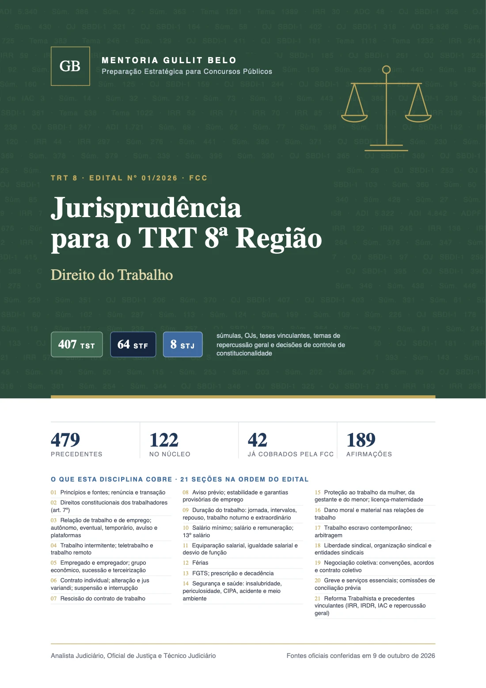

Jurisprudência para o TRT 8ª Região
Na FCC, a súmula quase nunca vem pelo número: vem com o prazo, o sujeito ou a exceção trocados. Analisei as questões de 31 provas recentes da banca e reuni os precedentes do TST, do STF e do STJ ligados ao edital, por disciplina e na ordem do programa. Cada um traz a regra em uma linha, o texto oficial, a troca que a banca costuma fazer e uma afirmação para você julgar.
Gullit Belo

Cada PDF traz a data em que as fontes oficiais foram conferidas. Se o TST, o STF ou o STJ mudar algum precedente até a prova, você recebe a versão atualizada.
PDF por disciplina e cartões para o Anki · acesso por 12 meses
Por dentro
Páginas reais do material. Toque para ampliar.
Pela Súmula 86 do TST, a massa falida recorre sem custas nem depósito, mas a empresa em liquidação extrajudicial não. Na prova, a afirmação estende o privilégio a quem a súmula exclui. Foi a súmula de Processo do Trabalho que mais apareceu nas provas que analisei.
Sete disciplinas, na ordem do edital
São 1.508 precedentes: 503 no núcleo, com cartão completo e afirmação para julgar, 163 prováveis (teses e mudanças de 2024 a 2026) e 842 para consulta, em uma linha no anexo. Ao todo, 666 afirmações Certo ou Errado com comentário.
junto com o TRT 8 dia a dia, no checkout do seu cargo
Constitucional, Administrativo, Civil, Processo Civil, Trabalho, Processo do Trabalho e Direitos Humanos · serve para Analista, Oficial de Justiça e Técnico, com a marca do que está no programa do Técnico
Só a jurisprudência, sem o material diário: R$ 97, ou em até 12x no cartão. Comprar avulso
Treine a troca antes que ela apareça na prova
O material diário traz os julgados centrais de cada tema. Aqui estão todos os precedentes vigentes ligados ao edital, nas mesmas seções do TRT 8 dia a dia, para você usar os dois juntos até a prova.
Gullit Belo · @mentoriagb
Quase vinte aprovações em concursos de tribunais (estaduais, federais, do trabalho e eleitorais), do Ministério Público, da AGU, do INSS e de universidades, além da OAB. Hoje sou servidor no TRT.